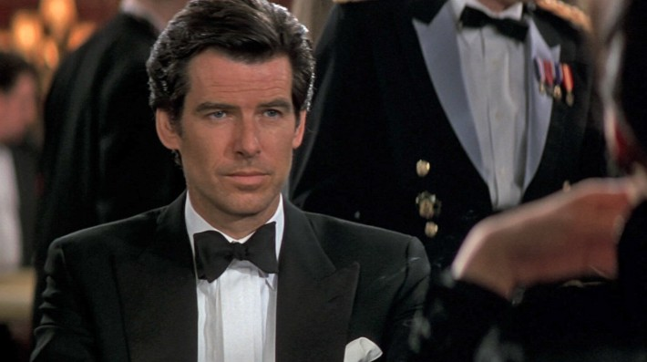
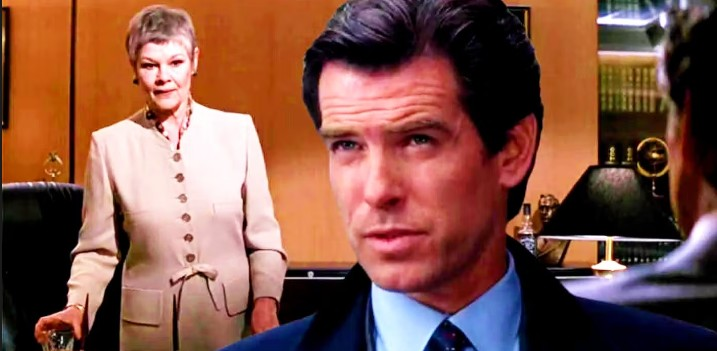

The Cold War Dinosaur That Reconquered the World: How GoldenEye Saved James Bond
When Pierce Brosnan stepped off the bungee platform on the Verzasca Dam in the opening moments of 1995’s GoldenEye, he wasn’t just diving into a secret Soviet chemical facility. He was plunging into an uncertain future for cinema's longest-running film franchise.
In the mid-1990s, James Bond was widely considered an endangered species. The fall of the Berlin Wall in 1989 had dissolved the geopolitical conflict that gave birth to Ian Fleming’s superspy, leaving Hollywood commentators asking a simple question: Does Agent 007 still matter in a post-Cold War world?
GoldenEye didn't just answer that question. It grossed $356.4 million globally, shattered franchise records, and established the definitive template for modern action filmmaking.

The Six-Year Dark Age
To understand the triumph of GoldenEye, one must appreciate how close the Bond franchise came to extinction.
Following 1989’s Licence to Kill, which was Timothy Dalton’s second and final outing, the franchise became entangled in a complex legal battle over distribution rights between Danjaq (the parent company of EON Productions) and MGM. The resulting six-year hiatus was the longest gap between Bond releases in history at the time.
During this lay-off, the landscape of blockbuster cinema changed radically:
- Action evolved: Films like Terminator 2: Judgment Day (1991), Speed (1994), and True Lies (1994) raised audience expectations for grand visual effects and practical stunts.
- Geopolitics shifted: The collapse of the Soviet Union eliminated the classic "Us vs. Them" espionage paradigm.
- Cultural norms moved on: Critics questioned whether an overtly womanizing, state-sanctioned killer belonged in 1990s pop culture.
Producer Barbara Broccoli and director Martin Campbell recognized that bringing Bond back required more than just a new actor; it demanded an ideological update.
Addressing the Elephants in the Room
Rather than ignoring Bond's outdated tropes, screenwriters Jeffrey Caine and Bruce Feirstein made his potential irrelevance the emotional and thematic core of GoldenEye.
1. The "Sexist, Misogynist Dinosaur"
Perhaps the most pivotal scene in the film occurs inside M’s office. In a bold casting choice, Dame Judi Dench took over the role of M, becoming the first woman to lead MI6 on screen.

When Bond attempts to charm his new supervisor, she shuts him down with razor-sharp precision:
"I think you're a sexist, misogynist dinosaur. A relic of the Cold War, whose boyish charms, though wasted on me, obviously appealed to that young woman I sent out to evaluate you."
By explicitly voicing the exact criticisms surrounding the franchise, the filmmakers effectively neutralized them. Bond was no longer immune to modern scrutiny; he was operating in a world that questioned his worth.
2. A Rogue Mirror Image: Alec Trevelyan
To challenge Bond’s unyielding loyalty to queen and country, GoldenEye introduced Sean Bean as Alec Trevelyan (Agent 006). As a former colleague turned rogue mastermind, Trevelyan served as Bond's dark alter ego. His betrayal, which was motivated by Britain’s historical post-WWII betrayal of his Cossack parents, forced 007 to confront the moral gray areas of state intelligence in a post-Cold War world.
Raising the Bar for Practical Action
Under the direction of Martin Campbell, GoldenEye blended classic practical stunt work with cutting-edge 1990s visual pacing.
| Key Sequence | Filming Highlight & Legacy |
|---|---|
| Verzasca Dam Bungee Jump | Performed by stuntman Wayne Michaels, this set a world record for the highest bungee jump from a fixed structure on film. |
| St. Petersburg Tank Chase | Filmed over several weeks using a modified Russian T-54/55 tank, creating an iconic urban destruction sequence. |
| Arecibo Dish Finale | A thrilling climax filmed at the giant radio telescope in Puerto Rico, grounding high-tech espionage in tangible physical danger. |
The Cultural Ripple Effect
GoldenEye’s impact extended far beyond cinema screens:
- Box Office Savior: Made on a budget of approximately $60 million, the film grossed $356.4 million worldwide, becoming the highest-grossing Bond film up to that point (unadjusted for inflation).
- Video Game Revolution: Two years later, developer Rare released GoldenEye 007 for the Nintendo 64. The game became a landmark achievement in gaming history, inventing modern console FPS mechanics and local 4-player split-screen multiplayer.
- The Martin Campbell Blueprint: Campbell proved so adept at reinventing 007 that EON brought him back a decade later to direct Daniel Craig's debut in Casino Royale (2006).
Conclusion: A Masterclass in Re-invention
GoldenEye succeeded because it respected the legacy of James Bond while fearlessly challenging his identity. By acknowledging the changing geopolitical world, casting powerful female leads, and modernizing action sequences, the film proved that 007 was far more than a "relic of the Cold War." He was a timeless cinematic icon capable of adapting to any era.
Sources & References
- Box Office & Production Stats: Wikipedia / Box Office Mojo (GoldenEye 1995 production overview).
- Director & Crew Interviews: SlashFilm retrospective on GoldenEye's commercial impact (citing director Martin Campbell & VFX supervisor Chris Corbould).
- Quotes & Script Analysis: Official film transcript (GoldenEye, MGM/UA Home Entertainment).